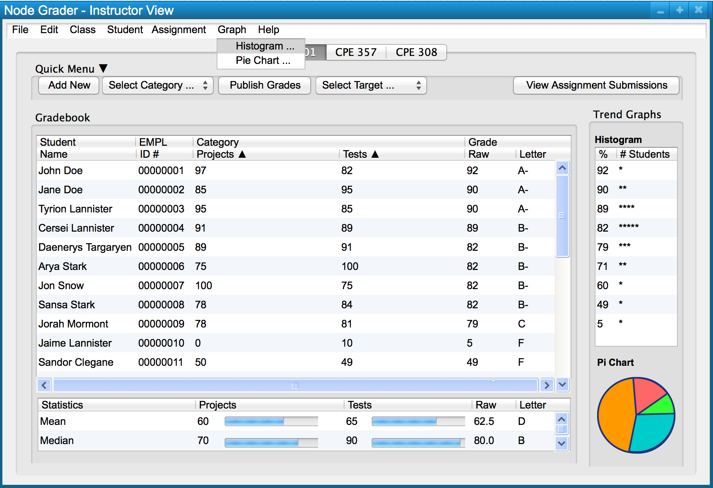
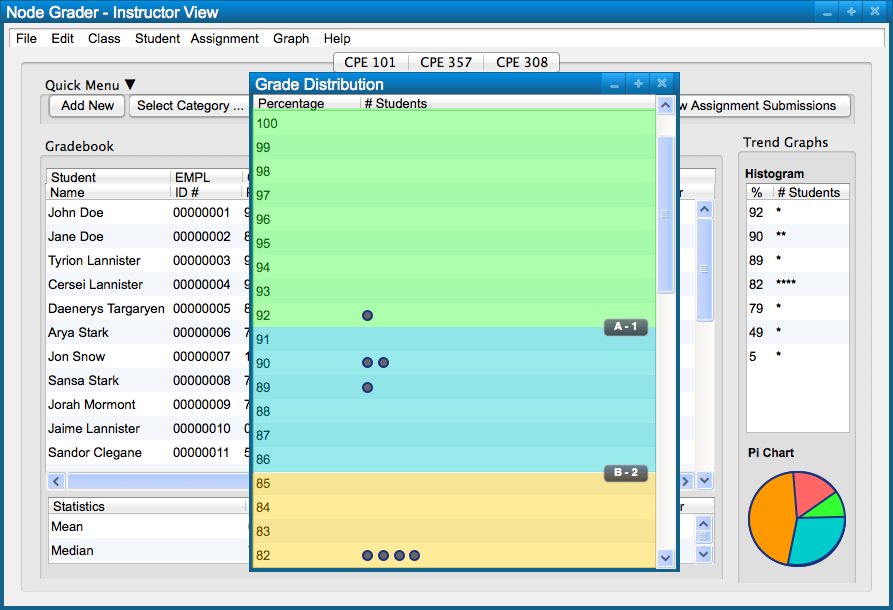
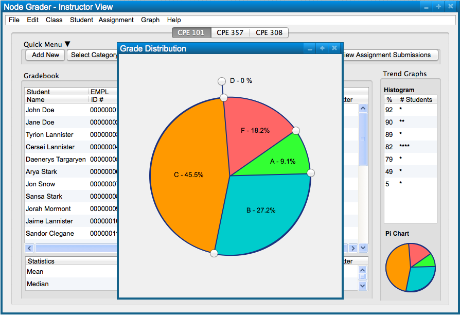
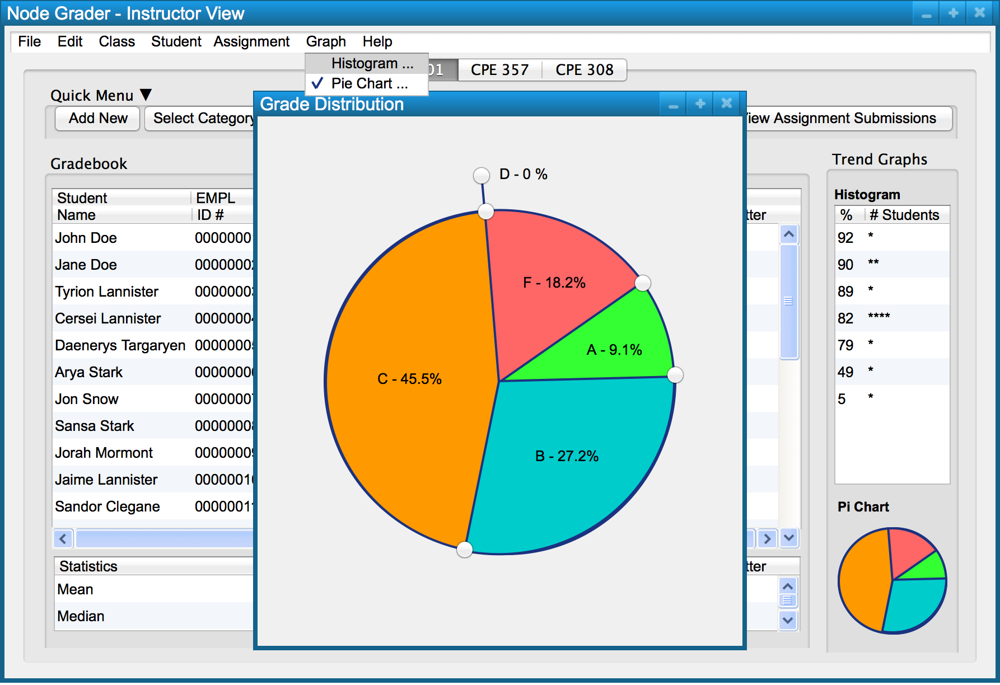
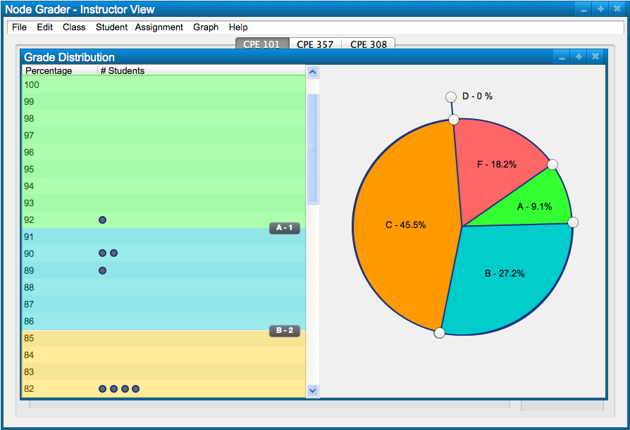
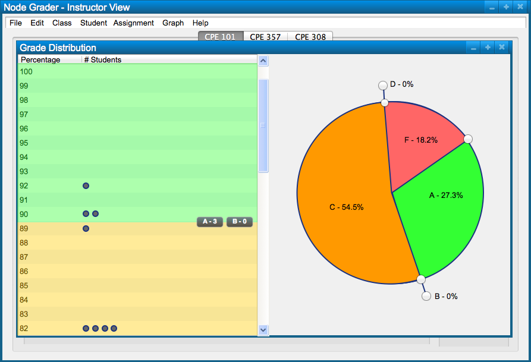
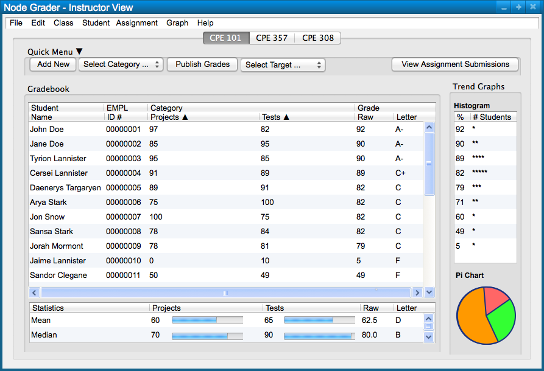

Scenarios in this section illustrate functions available to the system
administrator. These functions allow an administrator to change the grade curve distribution graphically, using both a histogram and a pie chart.
2.6.1. Histogram
In order to display the histogram for grade curve manipulation the user selects the 'Histogram ...' menu item in the 'Graph' menu, as seen in Figure 1.

Figure 1: Opening the histogram dialog.

Figure 2: Histogram dialog.
In order to display the histogram for grade curve manipulation the user selects the 'Pie Chart ...' menu item in the 'Graph' menu, as seen in Figure 3.
Figure 3: Opening the pie chart dialog.

Figure 4: Pie chart dialog.
In order to open both the histogram and pie chart in one dialog, the user checks both the 'Histogram ...' and 'Pie Chart ...' menu items in the 'Graph' menu. In Figure 5, the pie chart dialog is currently open and so the user selects the 'Histogram ...' menu item in order to display both graphs in a single dialog.

Figure 5: Opening both the histogram and pie chart in one dialog.
Figure 6 shows the dialog containing both the histogram and pie chart.

Figure 6: Histogram and pie chart dialog.
Figure 7 shows the current grade curve before any adjustment has taken place.
Figure 7: Histogram and pie chart dialog before adjusting the grade curve.
In order to adjust the grade curve via the pie chart, the user drags the circular buttons on the outside of the pie chart either clockwise or counter-clockwise.
If both graphs are open, when the user adjusts one graph, the other graph will automatically adjust as well.
Figure 8 shows the graphs after the user moves the minimum B grade up to match the minimum A grade. This makes it so that no students receive a B grade in the course.

Figure 8: Histogram and pie chart dialog after adjusting the grade curve.
Likewise, if the user moves the B button on the pie chart counter-clockwise, the A section continues to get smaller, while the C section gets bigger. However, if the user moves the B button clockwise, the B section becomes exposed and gets bigger as the C section gets smaller.
Any changes made to the grade curve are automatically saved when those changes are made.
Figure 9 shows the updated gradebook based on the new grade curve set by the user.

Figure 9: New gradebook based on the new grade curve.